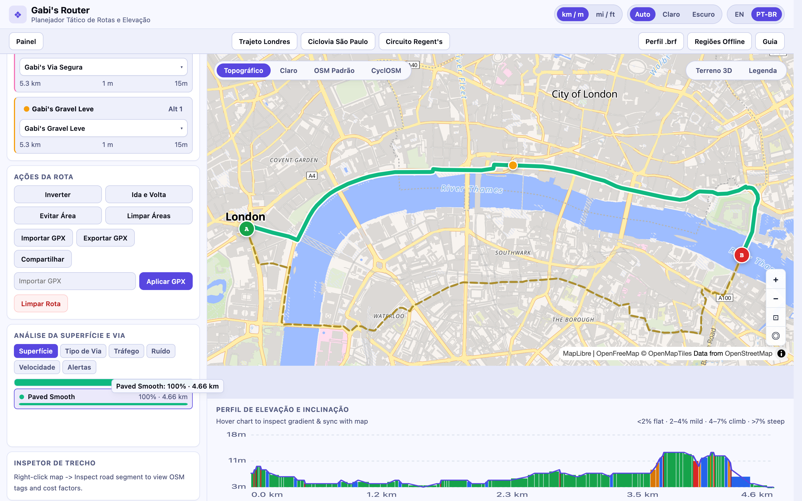
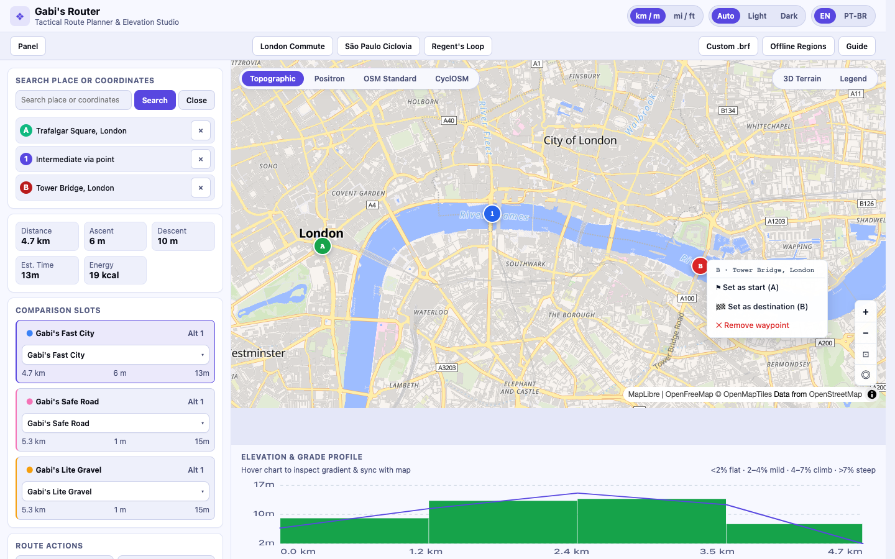
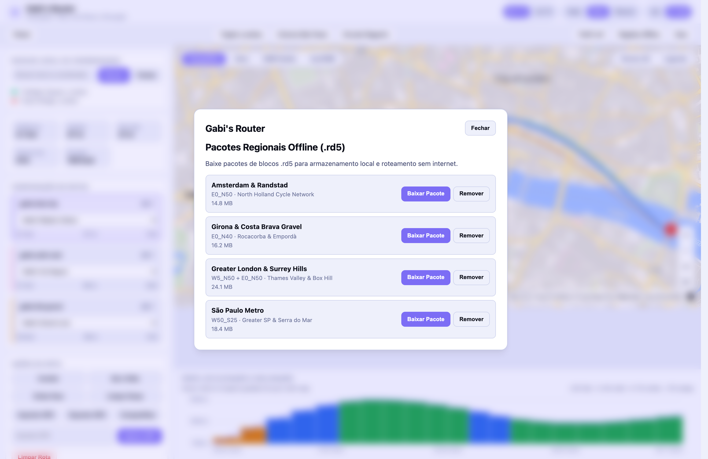
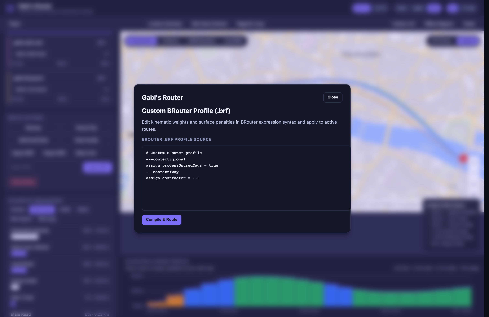
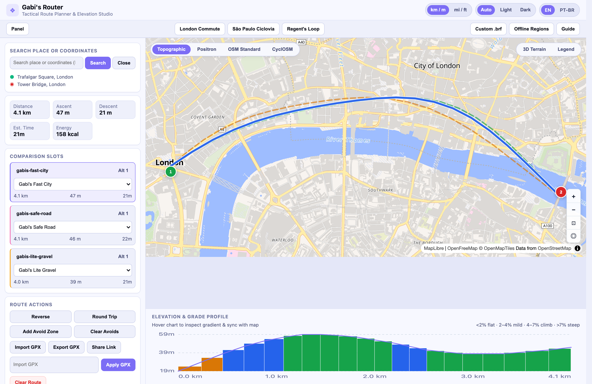

Gabi's Router — Bicycle Route Planner in Pure Pronto, Cortex & Wasm
A browser-native, offline-capable bicycle route planner powered by brouter-rs in WebAssembly, MapLibre GL JS cycling maps, and Cortex statecharts, preserving the surita.dev indigo-violet cartographic visual identity. Initial product brief ↓
Sprint 6: Proportional Breakdown Strip with Map Highlighting, Cycle-Route PMTiles, Real .rd5 Offline Downloads & Scrollbar-Free Profile Grid
Added a proportional contiguous SVG breakdown bar (.breakdown-svg-bar) and interactive category/warning rows (shell/renderers/surface-breakdown.js + shell/hatches/gpx-io.js) that highlight matching route segments and hover markers directly on the MapLibre canvas (route-segment-highlight) and reset cleanly across iframe boundaries and route changes. Bundled pmtiles@4.3.0 into the MapLibre realm unit to render regional cycling network overlays and shields from https://tiles.surita.dev/map-tiles/cycle_routes.pmtiles. Upgraded offline regional packs (sao-paulo, london, scotland, ireland) to transition through downloading while fetching real .rd5 graphs and warming .pmtiles headers from tiles.surita.dev with monotonic offline_seq memo keys, and redesigned the styled profile picker popover (.slot-profile-menu) as a compact 2-column grid with zero native scrollbars.

Sprint 6 — Interactive surface/road breakdown strip and category hover highlighting active route segments on the MapLibre cycling map alongside tiles.surita.dev PMTiles cycle routes.
Sprint 5: Real Street Routing via Embedded CRC-Verified .rd5 Segments, Waypoint Menu & Route-Line Via Dragging
Verified every routing and waypoint editing action side-by-side against the https://router.surita.dev/ oracle. Embedded CRC-verified BRouter .rd5 road-graph segments (W5_N50.rd5, E0_N50.rd5, W50_S25.rd5) directly into shell/units/brouter/unit.js to eliminate cross-origin segment fetch failures and removed synthetic fallback paths. Added A / 1..N / B map markers with a click/right-click action menu (#wp-menu: Set as start (A), Set as destination (B), Remove waypoint), interactive route polyline dragging (routes-active-hit + .via-ghost) to insert intermediate via waypoints on the closest leg, sidebar endpoint removal buttons (#btn-remove-start, #btn-remove-via, #btn-remove-end), and full PointWayInfo OSM tag decoding for road segment inspection.

Sprint 5 — Real street routing on London cycling infrastructure with an inserted intermediate via waypoint (1), open marker action menu (#wp-menu on B), 3-slot comparison cards, and slope-colored elevation profile.
Completed the offline regional bundle manager (OfflineBundle entity + IndexedDB segment cache inside shell/units/brouter/unit.js) for São Paulo Metro, Greater London & Surrey Hills, Amsterdam & Randstad, and Girona & Costa Brava Gravel, alongside right-click road segment tag inspection (inspect_point via WasmRouter::inspect_point), full English + Brazilian Portuguese (en / pt-BR) catalogues, and light/dark/auto theme parity.

Sprint 4 — Regional offline .rd5 + PMTiles bundle manager running in pt-BR with the surita.dev light theme active.
Built the custom .brf profile editor modal (modal == 'custom' in routerRows) that compiles custom BRouter DSL scripts directly into the WebAssembly engine via router.load_profile("custom", req.brf), dynamic nogo avoid circles (250m–5000m radius), and GPX import/export/share via the single gpx-io host-DOM hatch and WasmRouter::match_gpx_waypoints.

Sprint 3 — Custom .brf Profile Studio modal compiling live BRouter rules into the active comparison slot.
Compiled the Rust port of BRouter (brouter-rs + route-tools + rsrouter-wasm) from source with zero warnings into a self-contained WebAssembly agent unit (shell/units/brouter/unit.js) embedding all 10 cycling profiles and lookups.dat. Wired the sandboxed MapLibre GL 5.24.0 realm unit (shell/units/router-map/index.html), Nominatim geocoder unit (shell/units/geocoder/unit.js), and 12 Cortex row statecharts (screen-machines.cue) with the original gabis-router dark indigo-violet glassmorphic identity.

Sprint 1 — Live London route (Trafalgar Square to Tower Bridge) with multi-slot MapLibre polylines, waypoint controls, and slope-colored SVG elevation dock.
Gabi's Router
A browser-native, offline-capable bicycle route planner powered by brouter-rs in WebAssembly, MapLibre GL JS vector cycling maps, and Cortex state machines.
Data
All state lives in the cyclist's browser (durability: "device" and "tab"): Device (device), PlannerState (planner_state), RouteSlot (route_slot), RouteAnswer (route_answer), PlaceAnswer (place_answer), PlaceSuggestion (place_suggestion), and OfflineBundle (offline_bundle).
Screens
Router (/) — full-bleed interactive cycling map with floating glassmorphic workbench sidebar, bottom analytics drawer (pure Jessie elevation SVG chart, surface/road/traffic/noise/speed breakdowns, route warnings), and modals for the custom .brf Profile Studio, Offline Regional Bundles, and About & Tips.
Behavior
Every UI state transition is governed by Cortex via: "rows" statecharts (routerRows) verified by XState model checking. Domain mutations run in pure Jessie handlers. WebAssembly routing (brouter), Nominatim geocoding (geocoder), and MapLibre GL JS rendering (router-map) execute behind typed Omnishell unit boundaries.